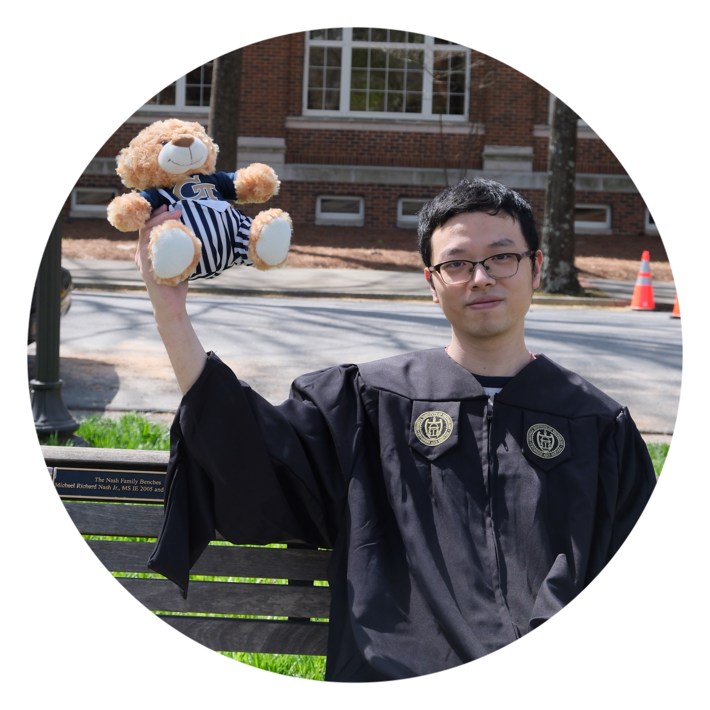

Welcome to my personal site !

Shot at Gatech in Spring 24 before graduation
Peirong LI
Education
- 2022.08 – 2024.05: Masters of Science in Computer Science at Georgia Institute of Technology
- 2022.07: Peking University (Globex program)
- 2019.07: UCL (summer exchange)
- 2018.09 – 2022.07: Bachelor of Science in Computer Science at the Chinese University of Hong Kong
Research interests
- User study
- User-friendly interface design
- Elderly support & Healthcare
- AI-HCI
Contact
- University email: 1155124372[at]link.cuhk.edu.hk or pli353[at]gatech.edu
- Personal email: scpery[at]gmail.com
- Google Voice: (+1) 470-795-2933
Recent news
- 2024.05: Graduated from Gatech MSCS 😎 (graduation ceremony on May 4th: find me at 2:17:09)
- 2022.07: Graduared from CUHK BSc CS 😀